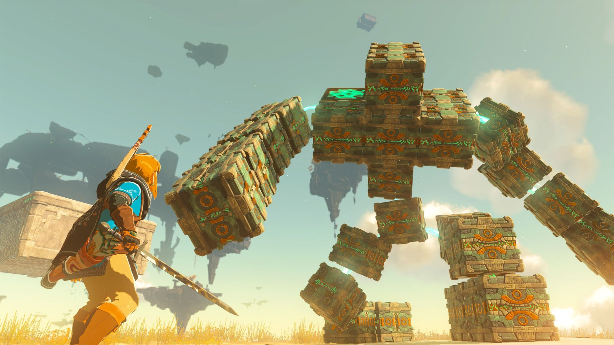

Análisis: The Legend of Zelda: Tears of the Kingdom
Nintendo lo ha vuelto a hacer. The Legend of Zelda: Tears of the Kingdom no solo consolida todo lo que hizo grande a Breath of the Wild, sino que lo eleva a un nivel que pocos títulos han conseguido alcanzar. Desde el primer momento en el que Link despierta en las Islas Celestes, queda claro que estamos ante una de las experiencias más ambiciosas de la última década.
Un mundo que se siente vivo
El reino de Hyrule es ahora más grande, más vertical y mucho más impredecible. La posibilidad de construir vehículos, armas y estructuras con el poder de Ultrahand cambia por completo la forma de explorar. Ya no hay un camino correcto: hay el que tú decides crear.

La libertad de exploración es el gran pilar del juego.
Historia y personajes
La narrativa vuelve a ser una de las grandes fortalezas de la saga. El misterio que rodea a las Ruinas Antiguas y al pasado de Hyrule se va desvelando de forma natural. Zelda tiene un papel mucho más activo y emotivo que en entregas anteriores.
Apartado técnico y sonido
Visualmente, Tears of the Kingdom prioriza la legibilidad y la belleza del mundo abierto. La banda sonora acompaña a la perfección tanto los momentos épicos como los de pura exploración.
Conclusión
Estamos ante un título imprescindible. Si ya disfrutaste de Breath of the Wild, aquí encontrarás todo lo que te gustó y mucho más. Una obra maestra que demuestra que todavía se pueden reinventar los mundos abiertos.